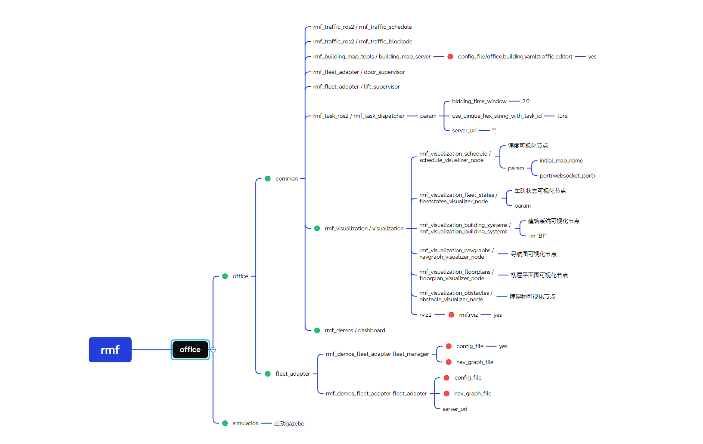
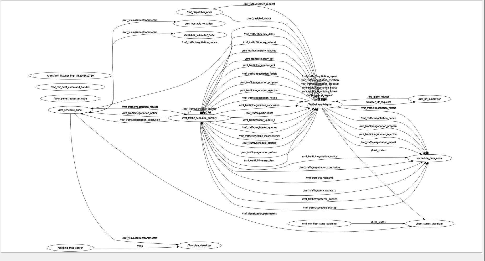

1. The Main Packages Used to Build RMF
1.1 rmf

下载
这个图片里面是openrmf里面的office.launch.xml文件里面对应的启动节点和作用

下载
这个是rmf集群中所用节点和消息的概览
1.2 rmf_adapter_mir
1.2.1 Nodes
a. TestDeliveryAdapter
这个节点是在main函数的create_fleet(config,nav_graph_path, mock=mock)方法中创建的，对应的语句如下，这个节点是最主要的节点，在fleet_adapter_mir中rmf和mir交流的桥梁，主要是在MirCommandHandle.py中创建了一个定时器self.state_update_timer = self.node.create_timer(170行)，不断调用两个方法来实现机器人的移动
| In file fleet_adapter_mir.py of package fleet_adapter_mir |
|---|
| # RMF_CORE Fleet Adapter: Manages delivery or loop requests
if mock:
adapter = adpt.MockAdapter(config['node_names']['rmf_fleet_adapter'])
else:
adapter = adpt.Adapter.make(config['node_names']['rmf_fleet_adapter'])
|
b. rmf_mir_fleet_command_handler
已知ros2调用包时，会根据setup.py里面的entry_points来执行对应的main函数
main函数只是声明了一个叫rmf_mir_fleet_command_handler的node并且添加运行了一下
| main中的相关语句 |
|---|
| def main(argv=sys.argv):
cmd_node = rclpy.node.Node(config['node_names']['robot_command_handle'])
#The value of config['node_names']['robot_command_handle' is rmf_mir_fleet_command_handler
rclpy_executor.add_node(cmd_node)
cmd_node.destroy_node()
|
| In file fleet_adapter_mir.py of package fleet_adapter_mir |
|---|
| handle_data = {
'fleet_handle': fleet,
'fleet_name': fleet_name,
'adapter': adapter,
'node': cmd_node, #this is relative to node rmf_mir_fleet_command_handler
'graph': nav_graph,
'robot_traits': robot_traits,
'transforms': transforms
}
|
MirCommandHandle.py中的代码
| In file fleet_adapter_mir.py of package fleet_adapter_mir |
|---|
| robot = MiRCommandHandle(
name=robot_name,
node=handle_data['node'],
rmf_graph=handle_data['graph'],
robot_traits=handle_data['robot_traits'],
robot_state_update_frequency=rmf_config.get('robot_state_update_frequency', 1),
dry_run=dry_run
)
|
c. rmf_mir_fleet_state_publisher
这个在main函数里面主要是声明了一个叫rmf_mir_fleet_state_publisher的node,定义了会发布FleetState消息的发布者fleet_state_pub，用定时器fleet_state_timer定时调用发布者的发布方法fleet_state_pub.publish(fleet_state)来发布FleetState消息
| In file fleet_adapter_mir.py of package fleet_adapter_mir |
|---|
| # INIT FLEET STATE PUB ====================================================
if config['rmf_fleet']['publish_fleet_state']:# 这个在配置文件mir_config.yaml里面value: Ture
fleet_state_node = rclpy.node.Node(config['node_names']['fleet_state_publisher'])
#The value of config['node_names']['fleet_state_publisher'] is rmf_mir_fleet_state_publisher
fleet_state_pub = fleet_state_node.create_publisher(
FleetState,
config['rmf_fleet']['fleet_state_topic'],
1
)
rclpy_executor.add_node(fleet_state_node)
def create_fleet_state_pub_fn(fleet_state_pub, fleet_name, robots):
def f():
fleet_state = FleetState()
fleet_state.name = fleet_name
for robot in robots.values():
fleet_state.robots.append(robot.robot_state)
fleet_state_pub.publish(fleet_state)
return f
fleet_state_timer = fleet_state_node.create_timer(
config['rmf_fleet']['fleet_state_publish_frequency'],
create_fleet_state_pub_fn(fleet_state_pub, fleet_name, robots)
)
|
{kind=link}
{kind=link}